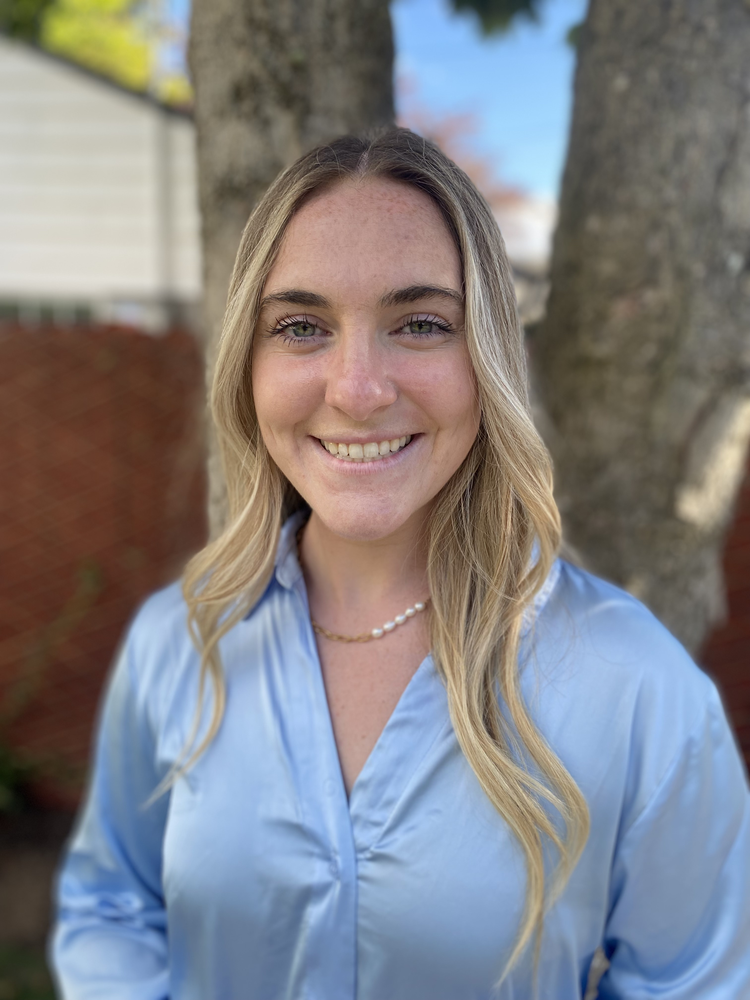

Efficient and goal-driven senior at The University of Iowa studying Business Analytics and Information Systems. Seeking to expand my knowledge of business with practical expertise and asking for your consideration of my credentials.
Work History
| Place of Employment | Title | Start Date | End Date |
|---|---|---|---|
| Costco Wholesale | Operations Associate | September 2021 | Present |
| Costco Wholesale (Corporate) | Inventory Control Specialist Intern | May 2022 | August 2023 |
| Voxman Music Building | Student Monitor | December 2022 | Present |
Skills Summary
Supply Chain and Logistics Management
- Used university software and databases to assign lockers to musicians based off instrument size and rental time. (Voxman School of Music)
- Upsold existing memberships to Executive memberships by utilizing YTD spending data to drive company revenue by explaining benefits to members during check out. (Costco)
- Worked to resolve supply chain issues in global warehouses by introducing new items found while analyzing YTD and PTD sales trends across various markets. Maintained steady inventory in international warehouses by placing and managing over $500,000 worth of purchase orders per week. (Costco)
- Liaise cross-functionally with regional level departments and external suppliers to optimize purchase order’s shipment via truck loads, driving down freight costs. (Costco)
Communication and Customer Service
- Showcased excellent verbal and written communications skills throughout multiple positions (Costco)
- Collaborative abilities and communication skills with members and coworkers drove promotions to member-facing roles. Recognized in May of 2021 in Costco employee newsletter as a model coworker. (Costco)
- Managed assignment to over 800 lockers and supervised the Music Administration’s email by promptly replying to renter’s questions. (Voxman School of Music)
- Managed merchandise supplier relationships by way of vendor and item agreement preparation and proactive communication via email and phone calls. (Costco)